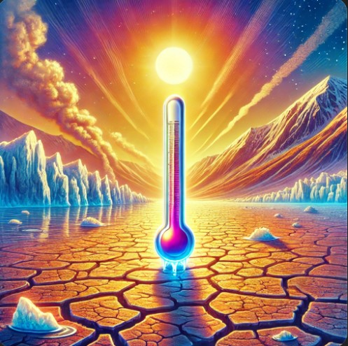
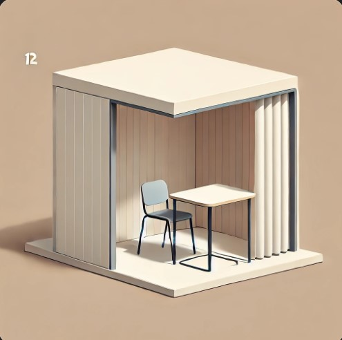
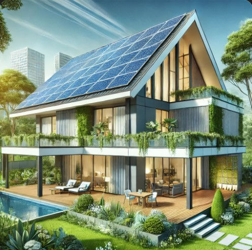
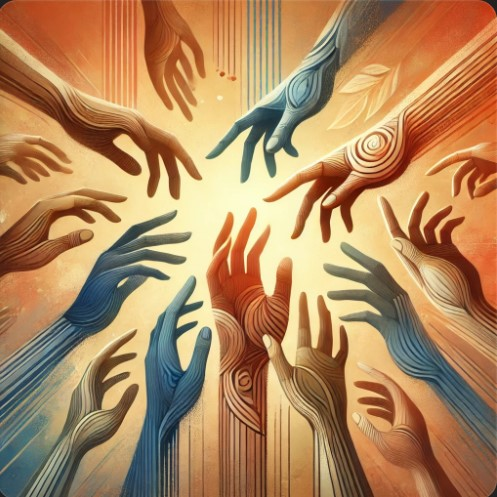
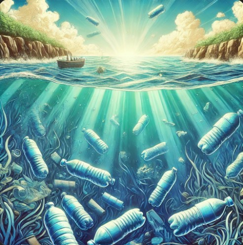

1. Climate Change Tracker
An interactive web tool showing real-time global temperatures, carbon emissions, and deforestation rates.
2. Accessible Voting Guide
A platform providing tailored voting resources for people with disabilities or language barriers.
3. Sustainable Living Tips
Interactive guides for reducing waste, conserving energy, and making sustainable choices.
4. Refugee Support Network
A community-based resource platform connecting refugees with local support services and job opportunities.
5. Plastic Waste Awareness
An engaging website showing the impact of plastic pollution and encouraging sustainable alternatives.